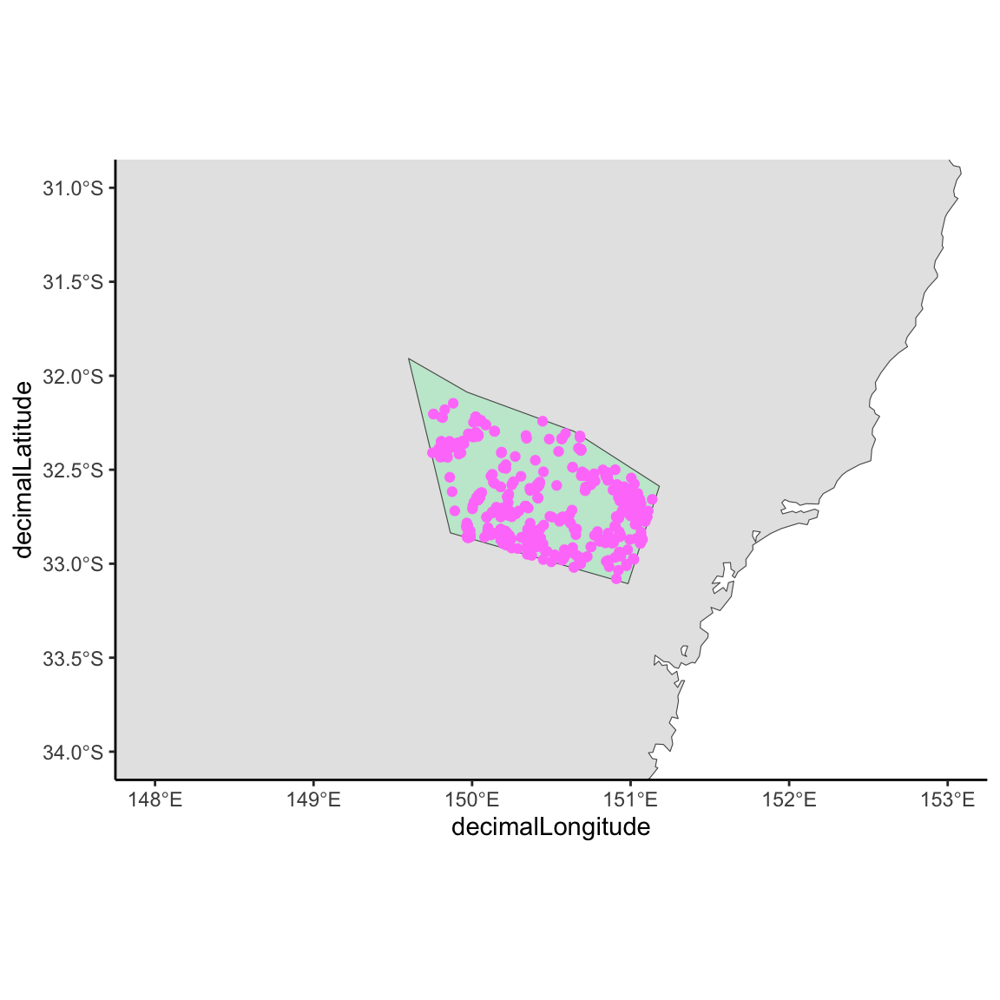

library(galah)
galah_config(
atlas = "Global",
email = Sys.getenv("GBIF_EMAIL"),
username = Sys.getenv("GBIF_USER"),
password = Sys.getenv("GBIF_PWD")
)6 Download data
Having decided on the scope of data required, we can get started with downloading data. We will discuss where and how to get data, as well as different techniques to refine your downloads.
6.1 Where to get data from
There are a wide variety of data aggregators available online, ranging from more regional or localised records, to those with a global scope. We will introduce a few of the most common ones.
One of the largest biodiversity aggregators is the Global Biodiversity Information Facility (GBIF), an international network and data infrastructure that provides open access biodiversity data from many sources around the world. Presently, GBIF manages and serves over 1.5 billion occurrence data points. These data points are aggregated from a number of particpant organisations, each of which collate biodiversity data from their own regions and sources, to be distributed through a designated ‘node’, with GBIF acting as the overarching organisation to store and provide this data using a unified data standard.
In addition to GBIF, there are a variety of other well known aggregators that index a large amount of records, such as Integrated Digitzed Biocollections and VertNet.
Besides these large scale aggregators, we can also download data dierectly from more localised aggregators, such as the regional nodes of GBIF. For example, the Atlas of Living Australia (ALA) is the Australian node, Sistema de Informação sobre a Biodiversidade Brasileira (SiBBr) is the Brazilian node, and GBIF Sweden is the Swedish node. Living Atlases like the ALA ingest and aggregate data from a broad range of providers such as government monitoring programs, museums and herbaria, research projects and citizen science initiatives. If your project is focused on a specific region, downloading data directly from a regional node may be more appropriate.
Note
To see what national and regional nodes exist, check out The GBIF Network.
If your project relates to data from a specific data provider, it also might be best to download data directly from the source. For example, a common citizen science tool to collect species observations is iNaturalist. Downloading directly from the original data source can help to ensure you don’t have any stray data from other sources.
6.2 Packages for downloading data
There are a range of R packages available for accessing biodiversity data. These packages serve as convenient interfaces to various data providers. By wrapping the respective APIs of data providers, they streamline the process of accessing and downloading datasets, directly within R. The functionality offered by these packages typically ranges from querying species occurrence records, to more comprehensive taxonomic and spatial download queries. Below, we highlight some commonly used packages. We encourage users to explore the documentation of each package to understand their capabilities, which will help you select one (or more!) that align with your specific needs.
- rgbif - Search and retrieve data from the Global Biodiversity Information Facility (GBIF)
- galah - An interface for accessing GBIF and GBIF network nodes that maintain their own APIs (i.e. the ‘living atlases’)
- rinat - An R wrapper for accessing iNaturalist observations
- rebird - Provides access to the eBird webservices.
- spocc - Query and collect species occurrence data from a variety of sources, including GBIF, ALA, VertNet, iDigBio and others.
6.3 Basic downloads via galah
In the majority of examples we will be using the galah package for download queries. One benefit of using galah is that in addition to species occurrence records, we can specify what metadata to return, from all available fields. It also allows access to any media, such as images or sounds, associated with the occurrence records.
6.3.1 Setting an atlas
With galah, records are downloaded from the configured atlas. You can set the atlas using galah_config(). For example, to set the atlas to the Global Biodiversity Information Facility (GBIF), enter your GBIF account credentials and set the atlas to “Global”. See ?galah_config for more configuration options. You can enter your details directly, or else save them in your .Renviron, so you don’t have to enter them explicitly.
6.3.2 Download from GBIF
For a basic download query, we simply pass a taxonomic identifier to the galah_identify() function, and end our query with atlas_occurrences() to return a data frame from the query. This is similar to the queries we made in Chapter 1, except there we used atlas_counts() to return counts of records rather than the observation data itself. Below is an example using the species name of the African Elephant, Loxodonta africana.
Note
Depending on your connection speed, downloads such as this (> 1700 records) may take some time to complete
african_ele <- galah_call() |>
galah_identify("Loxodonta africana") |>
atlas_occurrences()Checking queue
succeeded Downloaded records can be saved locally using write.csv() or readr::write_csv as with any other dataframe. For larger downloads, we recommend saving the data as a Parquet file, as the compression and read/write speeds are typically better for this type of data structure. We can do this using the arrow::write_parquet() function, and arrow::read_parquet() can be used to read in a parquet file.
arrow::write_parquet(african_ele, "data/gbif/elephant")
elephant <- arrow::read_parquet("data/gbif/elephant")6.3.3 Download from a regional node
Above, we downloaded records from GBIF. To access data from the Australian node, we change the galah configuration so that our query points to Australia. After that, we will download all records for the Pink Robin.
galah_config(
email = Sys.getenv("ALA_EMAIL"),
atlas = "Australia"
)
pink_robin <- galah_call() |>
galah_identify("Petroica rodinogaster") |>
atlas_occurrences()
Checking queue
Current queue size: 1 inqueue . running .6.3.4 Return specific data fields
When downloading data using atlas_occurrences, a default selection of data fields (columns) are returned, which includes some of the key taxonomic and spatial fields. There are fields for a wide array of metadata that may accompany an observation. To choose what fields are included in a download query, the galah_select function can be used. This function takes a vector of field names as an argument, and when used within a query, a tibble with only those fields will be returned. To see the fields available for selection use show_all(fields).
Below is an example of using galah_select() to download only the requested data fields, for records of the species Petroica rodinogaster.
library(galah)
galah_config(email = Sys.getenv("ALA_EMAIL"))
project_fields <- c(
"recordID",
"eventDate",
"year",
"basisOfRecord",
"occurrenceStatus",
"scientificName",
"genus",
"decimalLatitude",
"decimalLongitude"
)
pink_robin_projfields <- galah_call() |>
galah_identify("Petroica rodinogaster") |>
galah_select(all_of(project_fields)) |>
atlas_occurrences()
Checking queue
Current queue size: 1 inqueue . running 6.4 Taxonomic queries
Techniques specific to taxonomic queries and related knowledge.
6.4.1 Name discrepancies
To search by a taxonomic classification, include the original name that was recorded by the data provider in your download.
# Orchid as an example
# Read in problem child data and show
# Group by species and count unique values for higher taxonomyOrchids (family Orchidaceae) are one taxonomic clade that naming authorities have (famously) differing opinions about taxonomic classification. Comparing the scientific name originally provided with the observation by the data provider (i.e. raw_scientificName) compared to the name held within the Atlas of Living Australia (i.e. `scientificName) we are likely to notice some differences.
For example, say we were interested in downloading observations of Dendrobium, one of the largest genera of Orchids. Let’s download occurrence data of this genus using galah, and add raw_scientificName & taxonomicStatus information columns to our download.
galah_config(
atlas = "Australia",
email = Sys.getenv("ALA_EMAIL")
)
# Download Dendrobium occurrences
orchids <- galah_call() |>
galah_identify("Dendrobium") |>
galah_select(group = "basic", raw_scientificName, taxonomicStatus) |>
atlas_occurrences()
Checking queue
Current queue size: 1 inqueue . running .If we filter our data to data without an “accepted” taxonomic status and compare a random group of names (rows 30 to 50), we’ll see a few names with differing names between the raw_scientificName and scientificName
library(dplyr)
orchids |>
filter(
is.na(taxonomicStatus), # return names that aren't flagged as "accepted"
!scientificName...4 %in% scientificName...9
) |>
select(scientificName...4, scientificName...9) |>
slice(30:50)# A tibble: 21 × 2
scientificName...4 scientificName...9
<chr> <chr>
1 Dendrobium concavissimum Dendrobium concavissimum J.J.Sm.
2 Dendrobium concavissimum Dendrobium concavissimum J.J.Sm.
3 Dendrobium concavissimum Dendrobium concavissimum J.J.Sm.
4 Dendrobium concavissimum Dendrobium concavissimum J.J.Sm.
5 Dendrobium sect. Calyptrochilus Dendrobium sect. Calyptrochilus Schltr.
6 Dendrobium sect. Calyptrochilus Dendrobium sect. Calyptrochilus Schltr.
7 Dendrobium sect. Monophyllaea Monophyllaea
8 Dendrobium protractum Dendrobium protractum Dauncey
9 Dendrobium protractum Dendrobium protractum Dauncey
10 Dendrobium sect. Calyptrochilus Pedilonum sect. Calyptrochilus (Schltr.) Bri…
# ℹ 11 more rowsLucky for us, the Atlas of Living Austrlaia accounts for some of these differences when storing their data to help standardise these data taxonomically. However, this isn’t always the case for every taxonomic clade. Searching by classification is a good first step when you expect to find certain taxonomic classifications within your data set.
It’s useful to include synonyms of the species names you’re interested in your download to ensure you return the data you are interested in.
search_taxa("Dendrobium keffordii")# A tibble: 1 × 14
search_term scientific_name scientific_name_auth…¹ taxon_concept_id rank
<chr> <chr> <chr> <chr> <chr>
1 Dendrobium keff… Grastidium bai… (F.Muell.) Rauschert https://id.biod… spec…
# ℹ abbreviated name: ¹scientific_name_authorship
# ℹ 9 more variables: match_type <chr>, kingdom <chr>, phylum <chr>,
# class <chr>, order <chr>, family <chr>, genus <chr>, species <chr>,
# issues <chr>search_taxa("Grastidium baileyi")# A tibble: 1 × 14
search_term scientific_name scientific_name_auth…¹ taxon_concept_id rank
<chr> <chr> <chr> <chr> <chr>
1 Grastidium bail… Grastidium bai… (F.Muell.) Rauschert https://id.biod… spec…
# ℹ abbreviated name: ¹scientific_name_authorship
# ℹ 9 more variables: match_type <chr>, kingdom <chr>, phylum <chr>,
# class <chr>, order <chr>, family <chr>, genus <chr>, species <chr>,
# issues <chr>## Not sure what was meant to happen here
library(galah)
galah_call() |>
galah_filter(year > 2019) |>
atlas_counts()# A tibble: 1 × 1
count
<int>
1 272823616.5 Spatial filtering
We can add spatial filters to download queries, to return only records within a specified area. Spatial filtering , and are useful for long-term analyses of observations in specific regions or areas.
6.5.1 Filter by region
One way to download data is by filtering to an area of interest using fields already in the ALA and {galah}.
search_fields("wetlands")# A tibble: 1 × 4
id description type link
<chr> <chr> <chr> <chr>
1 cl901 Directory of Important Wetlands Directory of Important Wetl… laye… http…search_fields("cl901") |>
search_values("kakadu")# A tibble: 1 × 2
field category
<chr> <chr>
1 cl901 Kakadu National Park# Northern Snake-necked Turtle
galah_call() |>
galah_identify("Chelodina oblonga") |>
galah_filter(cl901 == "Kakadu National Park") |>
atlas_occurrences() |>
head(5) |>
gt::gt()
Checking queue
Current queue size: 1 inqueue running | decimalLatitude | decimalLongitude | eventDate | scientificName | taxonConceptID | recordID | dataResourceName | occurrenceStatus |
|---|---|---|---|---|---|---|---|
| -12.71089 | 132.5883 | 2018-03-28 05:47:34 | Chelodina (Macrochelodina) oblonga | https://biodiversity.org.au/afd/taxa/967549e7-7fa9-4770-b86e-5e3520d3c43d | 71f1273d-f425-4d49-8ea7-86bee30bb018 | iNaturalist Australia | PRESENT |
| -12.66610 | 132.4898 | 1998-10-23 00:00:00 | Chelodina (Macrochelodina) oblonga | https://biodiversity.org.au/afd/taxa/967549e7-7fa9-4770-b86e-5e3520d3c43d | a60cb14f-a2b0-48d2-8990-f088d7f07f5d | Fauna Atlas N.T. | PRESENT |
| -12.60000 | 132.8800 | 1982-09-02 00:00:00 | Chelodina (Macrochelodina) oblonga | https://biodiversity.org.au/afd/taxa/967549e7-7fa9-4770-b86e-5e3520d3c43d | 3a3825db-9ca9-4226-b513-25fc1d5564ad | Northern Territory Museum and Art Gallery provider for OZCAM | PRESENT |
| -12.53258 | 132.3971 | 1981-04-30 00:00:00 | Chelodina (Macrochelodina) oblonga | https://biodiversity.org.au/afd/taxa/967549e7-7fa9-4770-b86e-5e3520d3c43d | 3bd79448-e5bd-44c6-a819-18535fdc7985 | Fauna Atlas N.T. | PRESENT |
| -12.46670 | 132.5000 | NA | Chelodina (Macrochelodina) oblonga | https://biodiversity.org.au/afd/taxa/967549e7-7fa9-4770-b86e-5e3520d3c43d | f1a8f89a-1d56-4b45-89b8-4709c2adbf49 | Fauna Atlas N.T. | PRESENT |
# Show how to download data in galah with a bounding box6.5.2 Filter by vector geometry
Vector geometry can also be used to filter observations. The advantage of this method is that you can return data for very specific shapes or areas. The galah_geolocate() function accepts vector geometries in the form of simple feature objects, shapefiles or Well-Known Text (WKT) strings.
In this example, we first construct a simple polygon for a theoretical “site A”, using a WKT string. You could also import an existing geometry such as a shapefile. To work with spatial vector data we use the sf package. The function st_as_sf() is used to create a simple feature with type polygon, from our WKT string. The coordinate reference system (CRS) of our WKT is 4326, so we need to use st_set_crs() to set this value for our simple feature object. Now we can use this object in a download query using galah_geolocate() to filter the records.
my_polygon <- dplyr::tibble(
site = "A",
geometry = "POLYGON((149.96704 -32.08651, 150.64294 -32.2957, 151.18152 -32.58776, 150.98376 -33.10617, 149.86316 -32.83581, 149.59900 -31.90793, 149.96704 -32.08651))"
)
my_polygon_sf <- sf::st_as_sf(my_polygon, wkt = "geometry") |>
sf::st_set_crs(4326)
# Satin Bowerbird (*Ptilonorhynchus violaceus*
satin_bb <- galah_call() |>
galah_identify("Ptilonorhynchus violaceus") |>
galah_geolocate(my_polygon_sf) |>
atlas_occurrences()
Checking queue
Current queue size: 1 inqueue .Our download query returns only the records from within our polygon. We can visualise the result using ggplot2:
library(ggplot2)
aus <- sf::st_transform(ozmaps::ozmap_country, 4326)
ggplot() +
geom_sf(data = aus) +
geom_sf(data = my_polygon_sf, fill = "springgreen", alpha = 0.2) +
geom_point(data = satin_bb, color = "orchid1", aes(
x = decimalLongitude,
y = decimalLatitude
)) +
coord_sf(xlim = c(148, 153), ylim = c(-34, -31)) +
theme_classic() +
theme(legend.position = "bottom")
6.5.3 Filter by bounding box
Another way to filter a query is by using a bounding box. This is similar to the polygon method shown above. We again use galah_geolocate(), but set the type arguement, which is polygon by default to “bbox”. As a result, the provided POLYGON or MULTIPOLYGON will be converted into the smallest bounding box (rectangle) that contains the POLYGON. In this case, records will be included that may not exactly lie inside the provided shape.
6.6 Refining your download query
Open access biodiversity data comes from many different data sources such as government monitoring programs, museums, herbaria, research projects, and citizen science apps. As such, data type and quality can vary considerably. For example, museums harbour older records that are associated with a preserved specimens. These data often contain lots of extra information (metadata) about a specific specimen and its location. On the other hand, data sourced from citizen science apps like iNaturalist or eBird may have less extensive metadata in comparison, but can include associated images or sounds.
Refining your download query is useful for downloading only records that meet your project requirements, or filting records that may be of a lower quality. In any case, refining a dowload query where possible has the benifit of reducing filtering you would otherwise need to perform locally, and also reducing download size. Below we have illustrate a few ways of refining your download query using galah_filter.
6.6.1 By Year
Generally, old data records tend to be insufficient or less reliable as taxonomic knowledge and GPS tools were not readily available. For this reason, many users consider removing all occurrence records before a certain year to increase data precision (Gueta and Carmel 2016; Marsh et al. 2022).
Choosing the year ‘cut-off’ is relatively arbitary, but the most commonly used year is 1945 (Zizka et al. 2020; Führding-Potschkat, Kreft, and Ickert-Bond 2022), although some studies discard all data collected before 1990 (Gueta and Carmel 2016; Marsh et al. 2022).
Here we will narrow the Pink Robin query from above to records after 1945 using galah_filter:
pink_robin_post1945 <- galah_call() |>
galah_identify("Petroica rodinogaster") |>
galah_filter(year > 1945) |>
atlas_occurrences()
Checking queue
Current queue size: 1 inqueue running .6.6.2 Basis of record
Basis of record is a Darwin Core term that refers to the specific nature of the occurrence record. It can be used to refine your data download and ensure consistency when consolidating data from multiple organisations (Führding-Potschkat, Kreft, and Ickert-Bond 2022).
There are 6 different classes for basis of record:
- Living Specimen - a specimen that is alive, e.g. a living plant in a national park
- Preserved Specimen - a specimen that has been preserved, for example, a dried plant on an herbarium sheet
- Fossil Specimen - a preserved specimen that is a fossil
- Material Sample - a genetic or environmental sample
- Material Citation - A reference to, or citation of, a specimen in scholarly publications, e.g a citation of a physical specimen in a scientific journal
- Human Observation - an output of human observation process e.g. evidence of an occurrence taken from field notes or an occurrence without any physical evidence
- Machine Observation - An output of a machine observation process e.g. a photograph, a video, an audio recording, a remote sensing image or an occurrence record based on telemetry.
Depending on your data scope, it may be practical to limit data that can be traced to a physical specimen or observation (Godfree et al. 2021), which we do for the Pink Robin below
tractable_records <- c(
"LIVING_SPECIMEN",
"PRESERVED_SPECIMEN",
"MATERIAL_SAMPLE",
"MACHINE_OBSERVATION"
)
pink_robin_tractable <- galah_call() |>
galah_identify("Petroica rodinogaster") |>
galah_filter(basisOfRecord == tractable_records) |>
atlas_occurrences()
Checking queue
Current queue size: 1 inqueue 6.6.3 Assertions
Data infrastructures use assertions to internally grade the quality, completeness and consistency of each occurrence record. Assertions take values of either 1 or 0, indicating the presence or absence of the data quality issue. Note that assertions may vary depending what atlas you have configured to. You can see the available assertions and their descriptions using:
show_all("assertions")# A tibble: 114 × 4
id description category type
<chr> <chr> <chr> <chr>
1 AMBIGUOUS_COLLECTION Ambiguous collection Warning asse…
2 AMBIGUOUS_INSTITUTION Ambiguous institution Warning asse…
3 BASIS_OF_RECORD_INVALID Basis of record badly form… Warning asse…
4 biosecurityIssue Biosecurity issue Error asse…
5 COLLECTION_MATCH_FUZZY Collection match fuzzy Warning asse…
6 COLLECTION_MATCH_NONE Collection not matched Warning asse…
7 CONTINENT_COUNTRY_MISMATCH Continent country mismatch Warning asse…
8 CONTINENT_DERIVED_FROM_COORDINATES Continent derived from coo… Warning asse…
9 CONTINENT_INVALID Continent invalid Warning asse…
10 COORDINATE_INVALID Coordinate invalid Warning asse…
# ℹ 104 more rowsOnce you have decided which assertions are important for your project you can further refine your download. To retrieve all the assertions for your query use galah_select(group = "assertions")
probin_assertions <- galah_call() |>
galah_identify("Petroica rodinogaster") |>
galah_filter(basisOfRecord == tractable_records) |>
galah_select(group = "assertions") |>
atlas_occurrences()
Checking queue
Current queue size: 1 inqueue .# Preview all the assertions
head(colnames(probin_assertions), 10) [1] "recordID" "AMBIGUOUS_COLLECTION"
[3] "AMBIGUOUS_INSTITUTION" "BASIS_OF_RECORD_INVALID"
[5] "biosecurityIssue" "COLLECTION_MATCH_FUZZY"
[7] "COLLECTION_MATCH_NONE" "CONTINENT_COUNTRY_MISMATCH"
[9] "CONTINENT_DERIVED_FROM_COORDINATES" "CONTINENT_INVALID" # A quick way to check which assertions contain TRUEs
probin_assertions |>
select(-recordID) |>
colSums() AMBIGUOUS_COLLECTION
0
AMBIGUOUS_INSTITUTION
0
BASIS_OF_RECORD_INVALID
0
biosecurityIssue
0
COLLECTION_MATCH_FUZZY
0
COLLECTION_MATCH_NONE
0
CONTINENT_COUNTRY_MISMATCH
0
CONTINENT_DERIVED_FROM_COORDINATES
0
CONTINENT_INVALID
0
COORDINATE_INVALID
0
COORDINATE_OUT_OF_RANGE
0
COORDINATE_PRECISION_INVALID
2
COORDINATE_REPROJECTED
6
COORDINATE_REPROJECTION_FAILED
0
COORDINATE_REPROJECTION_SUSPICIOUS
0
COORDINATE_ROUNDED
0
COORDINATE_UNCERTAINTY_METERS_INVALID
143
COORDINATES_CENTRE_OF_COUNTRY
0
COORDINATES_CENTRE_OF_STATEPROVINCE
0
COUNTRY_COORDINATE_MISMATCH
0
COUNTRY_DERIVED_FROM_COORDINATES
0
COUNTRY_INVALID
0
COUNTRY_MISMATCH
0
DEPTH_MIN_MAX_SWAPPED
0
DEPTH_NON_NUMERIC
0
DEPTH_NOT_METRIC
0
DEPTH_UNLIKELY
0
detectedOutlier
0
DIFFERENT_OWNER_INSTITUTION
0
ELEVATION_MIN_MAX_SWAPPED
0
ELEVATION_NON_NUMERIC
0
ELEVATION_NOT_METRIC
0
ELEVATION_UNLIKELY
0
FIRST_OF_CENTURY
0
FIRST_OF_MONTH
14
FIRST_OF_YEAR
26
FOOTPRINT_SRS_INVALID
0
FOOTPRINT_WKT_INVALID
0
FOOTPRINT_WKT_MISMATCH
0
GEODETIC_DATUM_ASSUMED_WGS84
234
GEODETIC_DATUM_INVALID
0
GEOREFERENCE_POST_OCCURRENCE
2
GEOREFERENCED_DATE_INVALID
0
GEOREFERENCED_DATE_UNLIKELY
0
geospatialIssue
0
habitatMismatch
0
ID_PRE_OCCURRENCE
0
identificationIncorrect
0
IDENTIFIED_DATE_INVALID
0
IDENTIFIED_DATE_UNLIKELY
0
INDIVIDUAL_COUNT_CONFLICTS_WITH_OCCURRENCE_STATUS
0
INDIVIDUAL_COUNT_INVALID
2
INSTITUTION_COLLECTION_MISMATCH
0
INSTITUTION_MATCH_FUZZY
0
INSTITUTION_MATCH_NONE
0
INTERPRETATION_ERROR
0
INVALID_SCIENTIFIC_NAME
0
LOCATION_NOT_SUPPLIED
21
MISSING_COLLECTION_DATE
43
MISSING_GEODETICDATUM
234
MISSING_GEOREFERENCE_DATE
336
MISSING_GEOREFERENCEDBY
336
MISSING_GEOREFERENCEPROTOCOL
281
MISSING_GEOREFERENCESOURCES
331
MISSING_GEOREFERENCEVERIFICATIONSTATUS
338
MISSING_TAXONRANK
196
MODIFIED_DATE_INVALID
0
MODIFIED_DATE_UNLIKELY
0
MULTIMEDIA_DATE_INVALID
0
MULTIMEDIA_URI_INVALID
3
NAME_NOT_SUPPLIED
4
OCCURRENCE_STATUS_INFERRED_FROM_BASIS_OF_RECORD
0
OCCURRENCE_STATUS_INFERRED_FROM_INDIVIDUAL_COUNT
1
OCCURRENCE_STATUS_UNPARSABLE
0
PRESUMED_NEGATED_LATITUDE
0
PRESUMED_NEGATED_LONGITUDE
0
PRESUMED_SWAPPED_COORDINATE
0
RECORDED_DATE_INVALID
59
RECORDED_DATE_MISMATCH
0
RECORDED_DATE_UNLIKELY
0
REFERENCES_URI_INVALID
0
SENSITIVITY_REPORT_INVALID
0
SENSITIVITY_REPORT_NOT_LOADABLE
0
STATE_COORDINATE_MISMATCH
0
TAXON_AFFINITY_SPECIES
0
TAXON_CONFER_SPECIES
0
TAXON_DEFAULT_MATCH
0
TAXON_ERROR
0
TAXON_EXCLUDED
0
TAXON_EXCLUDED_ASSOCIATED
0
TAXON_HOMONYM
0
TAXON_INDETERMINATE_SPECIES
0
TAXON_MATCH_AGGREGATE
0
TAXON_MATCH_FUZZY
0
TAXON_MATCH_HIGHERRANK
0
TAXON_MATCH_NONE
0
TAXON_MISAPPLIED
0
TAXON_MISAPPLIED_MATCHED
0
TAXON_PARENT_CHILD_SYNONYM
0
TAXON_QUESTION_SPECIES
0
TAXON_SCOPE_MISMATCH
0
TAXON_SPECIES_PLURAL
0
taxonomicIssue
0
temporalIssue
0
TYPE_STATUS_INVALID
0
UNCERTAINTY_IN_PRECISION
0
UNCERTAINTY_NOT_SPECIFIED
0
UNKNOWN_COUNTRY_NAME
0
UNKNOWN_KINGDOM
0
UNRECOGNISED_COLLECTION_CODE
0
UNRECOGNISED_INSTITUTION_CODE
0
userAssertionOther
0
userDuplicateRecord
0
ZERO_COORDINATE
0 # Requery for single assertion
probin_subset <- galah_call() |>
galah_identify("Petroica rodinogaster") |>
galah_filter(
basisOfRecord == tractable_records,
identificationIncorrect == FALSE
) |>
galah_select(group = "basic") |>
atlas_counts()
# For exclusions using multiple assertions [Currently throws errors, need to think carefully about != means for logical assertions...]
# assertions <- c("UNKNOWN_KINGDOM", "identificationIncorrect",
# "COORDINATE_PRECISION_MISMATCH", "MISSING_GEODETICDATUM")
#
# galah_call() |>
# galah_identify("Petroica rodinogaster") |>
# galah_filter(basisOfRecord == tractable_records,
# assertions != IA_assertions) |>
# atlas_counts()